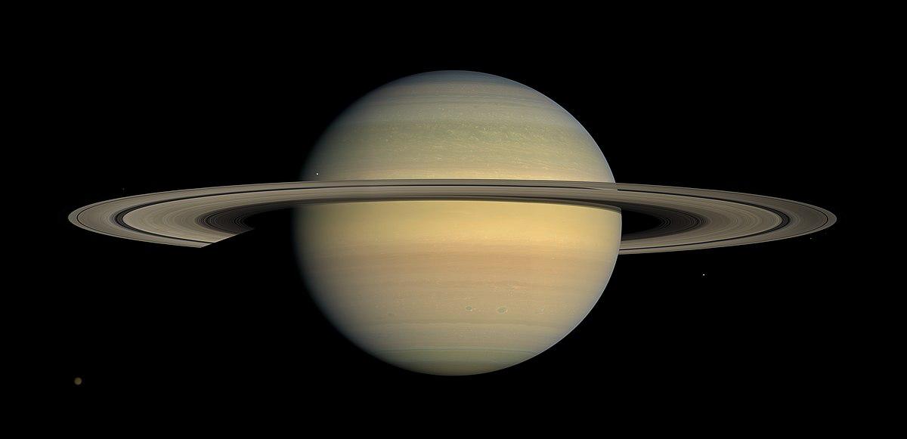
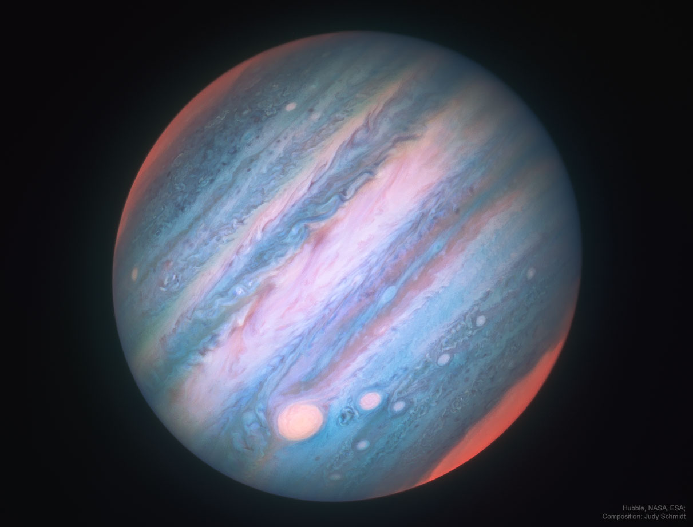
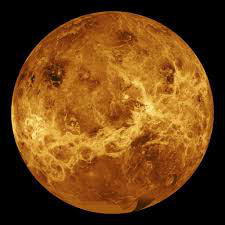
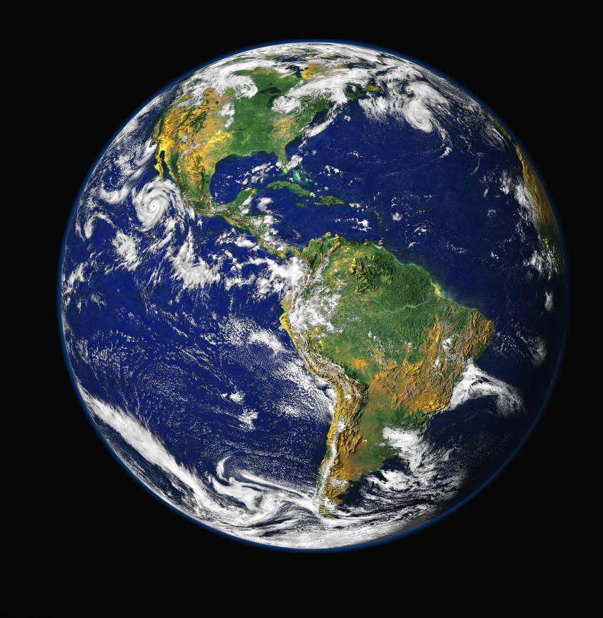

   
| Saturn | Jupiter | Venus | Earth | |
|---|---|---|---|---|
| Mass(kg) | 5.69 x 10 26 | 1.90 x 10 27 | 4.87 x 10 24 | 5.98 x 10 24 |
| Diameter(km) | 120,660 | 142,800 | 12,104 | 12,576 |
| Mean Density(kg/m3) | 690 | 1,314 | 5,250 | 5,520 |
| Escape Velocity(m/s) | 35,600 | 59,500 | 10,400 | 11,200 |
| Avg Dist from Sun(AU) | 9.537 | 5.203 | 0.723 | 1 |
| Rotational Period(Earth Days) | 0.44 (10.2 Earth hours) | 0.41 (9.8 Earth hours) | 243.02 (retrograde) | 1 (23.93 hours) |
| Revolution Period(Earth Years) | 29.46 | 11.86 | 224.7 | 365.26 |
This Website Was Created by Wardha Iftikhar